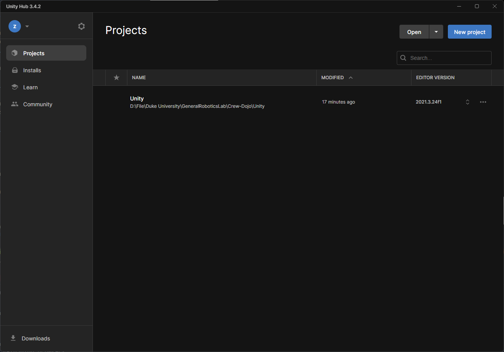
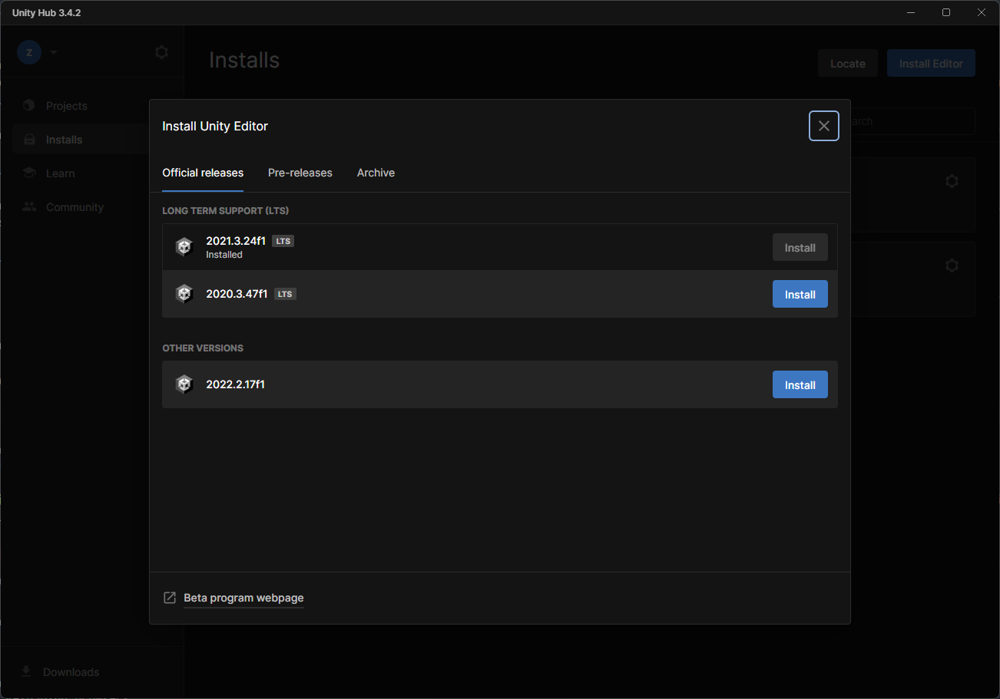
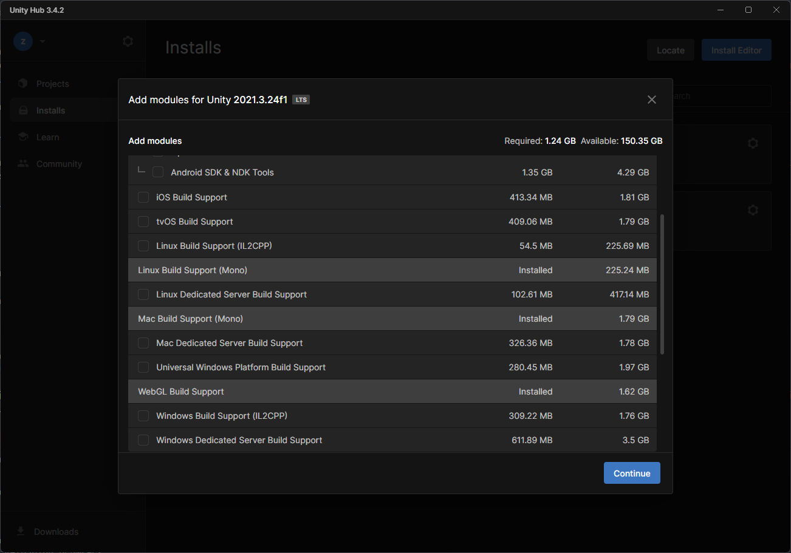
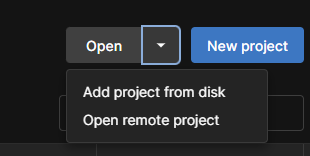
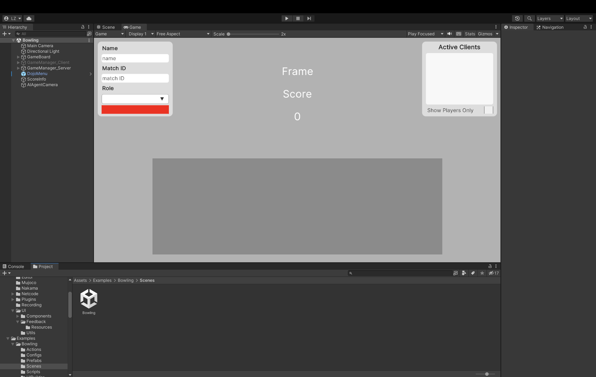
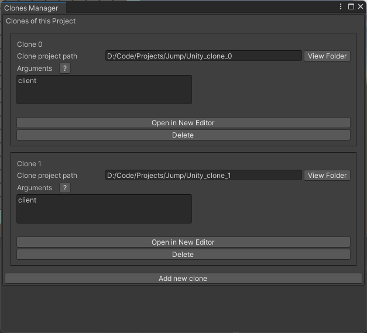
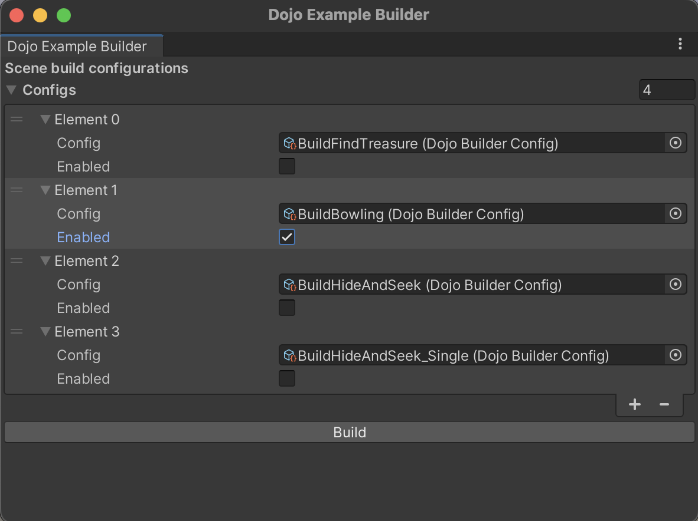
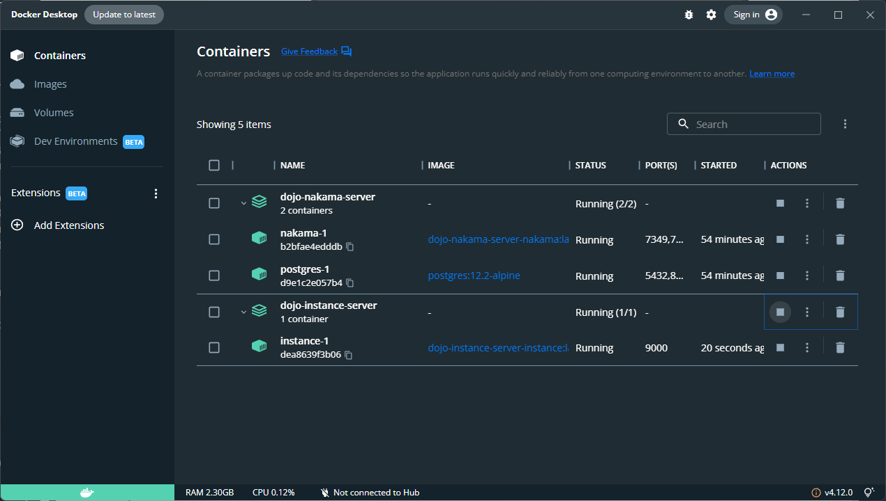

Setup Dojo
Start by navigating into crew-dojo
Setting up a Dojo environment involves two key components: Unity and Nakama. Unity is a game engine and development platform that provides a range of tools for creating interactive experiences, while Nakama is an open-source server designed for real-time multiplayer games and social apps.
The setup process involves configuring the Unity environment and launching Nakama server. Additionally, developers may need to set up and download additional tools, such as Docker, to facilitate the development process.
Unity
Unity is one of the crucial components of this project. Unity is a powerful game engine and development platform used to create a wide range of video games, as well as virtual and augmented reality applications. It offers a variety of features and tools for developers to create interactive experiences, including a visual editor, scripting tools, physics engine, and asset management system. Unity supports multiple platforms, such as Windows, Linux, macOS, WebGL, Android, iOS, and more, making it a popular choice for game development across different devices and platforms.
To run the pre-existing games on Windows or Linux, users can obtain pre-built executables from the developers of this repository. This option is suitable for those who are not planning to modify or develop games in Dojo. If you are interested in this option, please feel free to skip the rest of this section.
Editor Installation
Unity is the game engine used to develop all the games in the Dojo repository. To access Unity, users must first register for a free account on the Unity website. Once registered, proceed to the downloads page and select the appropriate installer based on the operating system. For Ubuntu systems, the application can be downloaded from the ubuntu unity website.
After installing Unity Hub, users can log in with their registered account. Upon logging in, they will be presented with an interface similar to the following:

To install a Unity editor through the Unity Hub, begin by selecting the "Installs" option located on the left-hand panel of the interface. Then, click on the "Install Editor" button located in the top right corner of the screen.

The version of Unity utilized in the Dojo repository is 2021.3.24f1. If this version is not readily available under official releases, users may locate it by selecting the "Archive" option. Alternatively, they may visit the Unity download archive to obtain the appropriate version.
To proceed with the installation process, download both the game engine and editor.
Please note that using a newer version of Unity that begins with 2021.3.X should also be compatible with the Dojo repository.
While choosing the modules, make sure that Windows (mono), Linux (mono), Mac (Mono) and WebGL builds are selected.

Open Dojo Project
To add the Dojo repository folder to user's Unity project, first click on the "Projects" tab on the Unity Hub side panel. Then, select the "Add project from disk" option located in the top right corner and navigate to the Dojo repository folder.

Upon opening the project in the Unity editor, the necessary packages used in Dojo will be automatically installed on first launch. Feel free to ignore any exceptions about .meta files from the console.
To access the example games, navigate to the "Project window" in the Unity editor and locate the "Assets/Examples" folder. The example games can be found within this folder. For instance, to open the Bowling game, double-click on "Assets/Examples/Bowling/Scenes/Bowling" in the Project window. Please note that user's editor layouts may differ from the image provided, but the game view window should be similar to the one shown.

ParrelSync Setup
In the "Hierarchy window", all of the game objects used in the current scene can be found. For example, in Bowling, notice the presence of GameManager_Client and GameManager_Server. These objects are used in multiplayer games over a network, where one game instance runs as a server, authorizing actions from all connected clients. The authoritative server is crucial to ensure that the game view remains consistent across all clients. Therefore, when using Unity Editor, users have the option of playing the game in either server mode or client mode.
Due to the need to debug the game by running one editor as server and the other as client, it is highly recommended to setup ParrelSync, a Unity package installed that enables users to launch another Unity editor on the same project.
First, locate "ParrelSync" on the editor menu. Click "ParrelSync/Clone Manager" to open the manager window. Users will have the option to create as many clones of the Dojo project as they like.

After cloning, click "Open in New Editor" to launch another editor window. Then, in "Hierarchy window", disable GameManager_Server and enable GameManager_Client to play in client mode. Notice that only one of the two managers will be need to be enabled at a time.
Build a Game
To generate a game build, locate "DojoBuilder" in editor menu and open "Dojo Example Builder" window.

Enable the games to build and customize the builder configurations. By default, a "Builds" folder will be created under Dojo folder and game builds will be exported there.
Nakama
Nakama is a crucial framework that facilitates game hosting, client identity, and matchmaking. By utilizing Nakama, Dojo can connect clients over the internet and enable them to join the same game match. To begin using Nakama, Docker is necessary.
Docker Installation
Docker is a popular containerization platform that allows developers to package and deploy applications as self-contained units, called containers. Containers provide a lightweight and efficient way to isolate and run applications, ensuring that they can run consistently across different environments and platforms. With Docker, developers can easily build, test, and deploy applications in a reliable and reproducible way, without worrying about conflicts or dependencies.
After installing and launching Docker service, open "Nakama" folder in Dojo repository. Run run.sh or run.bat depending on the operating system. Verify that the container called dojo-nakama-server has started running.

Note: If nakama container failed, it may be a version change of Nakama packages. To resolve this, remove go.mod and go.sum and run the script again.
If an error indicating "vendor" folder not exist, this may be caused by go package url. Run the following to resolve it:
Nakama Console
Nakama server comes with a console. After launching the containers, open http://127.0.0.1:7351/ in browser to view the connected users and ongoing matches.
The default username is admin. Default password is password.
Linux-specific Steps
On Linux environment, you may need to configure /etc/hosts file and add following line so that host.docker.internal DNS resolute to the Docker container IP address.
By default, each server built Unity instance will try to connect Docker via host.docker.internal address. Make sure this path exists for the system environment where the Instance Server will be running.